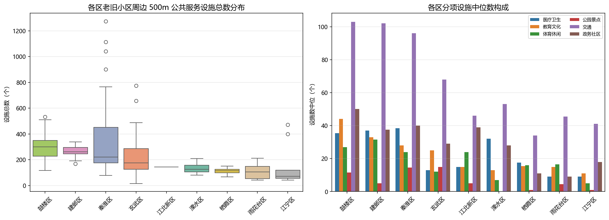
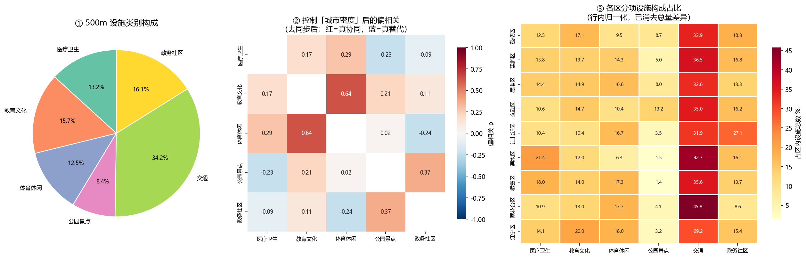
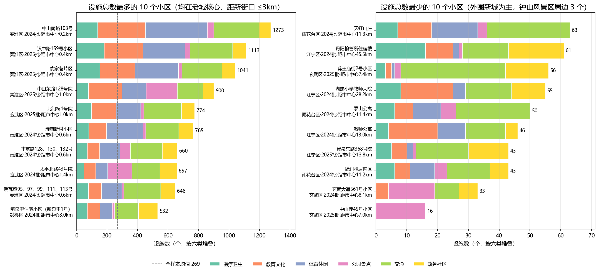
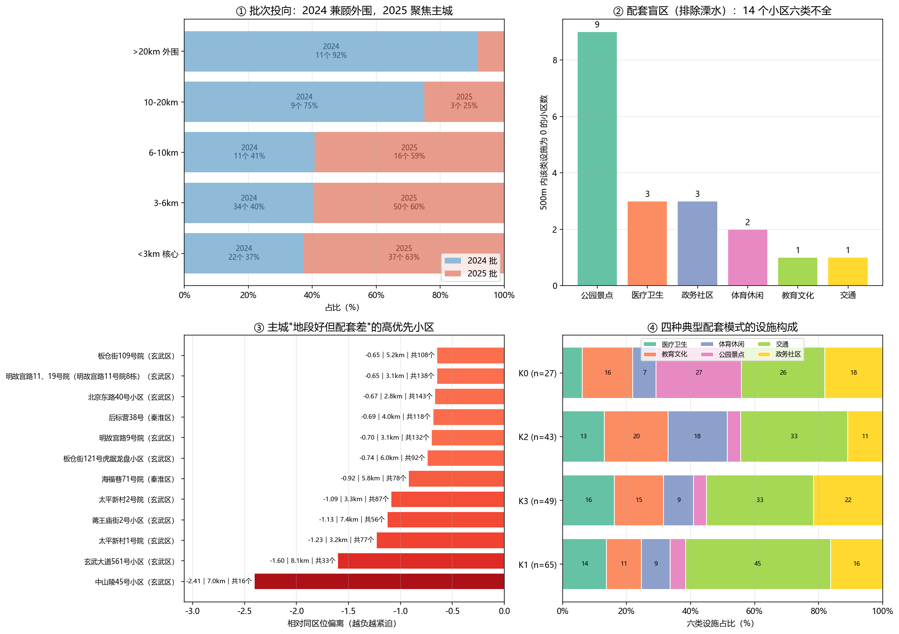
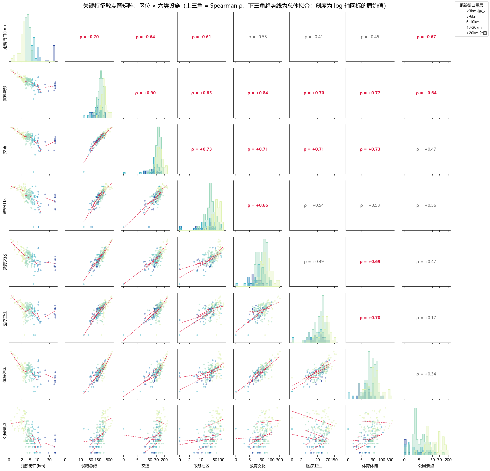

不同区的设施总量和类别构成并不相同
箱线图保留了区内离散程度，右侧分项中位数则帮助判断差异主要来自哪类设施，避免只使用一个平均值概括整个行政区。

Urban renewal · Spatial analysis
将老旧小区改造名单与地图平台公共服务设施数据结合，观察 500 米生活圈中的区际差异、空间结构和潜在配套盲区。

项目从分散的公开名单出发，统一行政区、小区名称、改造年份和坐标信息，再汇总每个小区周边六类公共服务设施数量。分析重点不是给小区简单排名，而是把总量、结构、区位和样本规模放在一起解释。
箱线图保留了区内离散程度，右侧分项中位数则帮助判断差异主要来自哪类设施，避免只使用一个平均值概括整个行政区。

远郊样本与主城样本同框时会压缩中心城区细节。分级放大同时保留全市位置关系和主城内部差异，点大小或颜色用于表达设施总量。
交通设施约占六类设施总量的 34.2%。由于多类设施共享“城市密度”这一潜在因素，项目进一步控制密度代理变量后观察偏相关，并比较各区内部构成。

幂律拟合的 R² 为 0.42。核心区样本设施总数中位数为 362，3—6 公里和 6—10 公里圈层分别为 221 和 150。远距离圈层样本较少，因此只作探索性比较。

设施总数较高的样本集中于老城核心，低值样本以外围新城为主。堆叠条形图把六类设施拆开，便于判断差距来自单一类别还是整体不足。

在排除设施数据不准确的溧水样本后，有 14 个小区在 500 米内未覆盖全部六类设施，公园景点缺失最常见。优先名单强调“相对同区位基线偏低”，而不是简单选择绝对值最低者。

散点矩阵用于检查区位、设施数量之间的趋势、离群点和分组结构，作为相关系数和聚类结果之外的视觉诊断。
